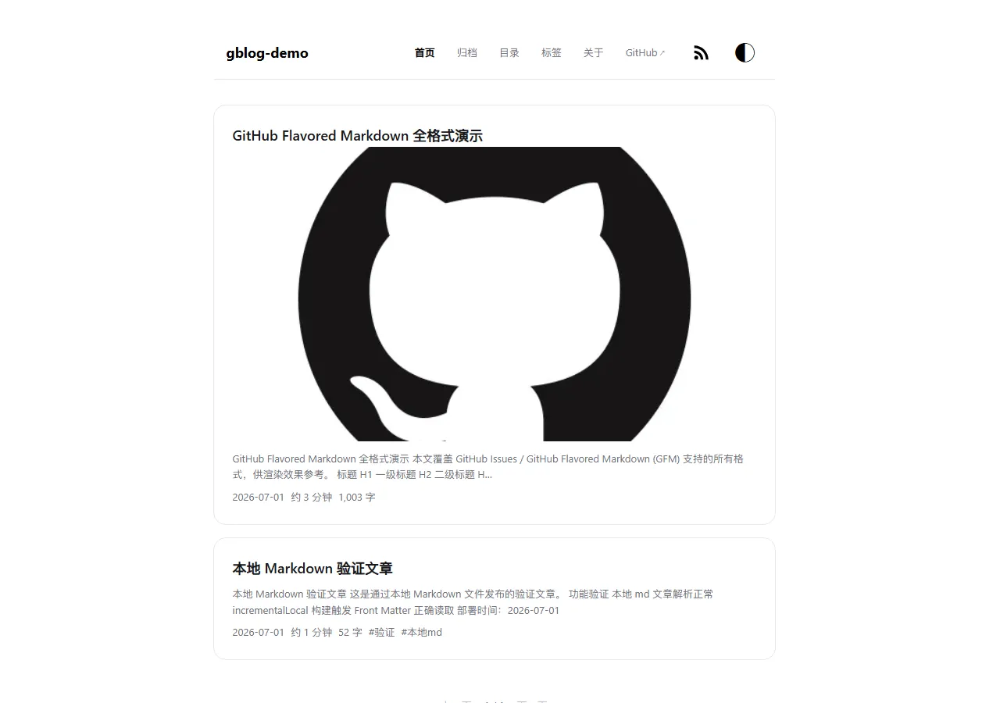

Markdown 完整格式预览
Markdown 完整格式预览
这是一篇纯示例文章，用于检查 Markdown、强调、组合强调、删除线 与 inline code 的显示效果，不包含任何个人信息或凭据。
标题与链接
三级标题
可以访问 GitHub Docs；也可以使用自动链接 https://example.com/。特殊字符可写成 <demo>。
列表与任务项
- 无序列表第一项
- 嵌套项 A
- 嵌套项 B
- 无序列表第二项
- 有序步骤一
- 有序步骤二
- 子步骤 2.1
- 子步骤 2.2
- 已完成的预览项
- 待完成的预览项
引用、代码与表格
这是一段引用。
这是嵌套引用，用来检查层级与留白。
type Preview = { title: string; published: boolean };
const post: Preview = { title: "demo", published: true };
console.log(post.title);
| 语法 | 输入 | 预期 |
|---|---|---|
| 强调 | **text** | 粗体 |
| 任务 | - [x] item | 勾选框 |
| 代码 | `code` | 行内代码 |
图片、脚注与数学

这句话带一个使用安全 HTML 锚点实现的脚注1。
行内公式：。
展开 HTML 预览
这里包含 高亮文本、键盘按键 Ctrl + K，以及 HTML 缩写。
- 这是示例脚注内容。↩